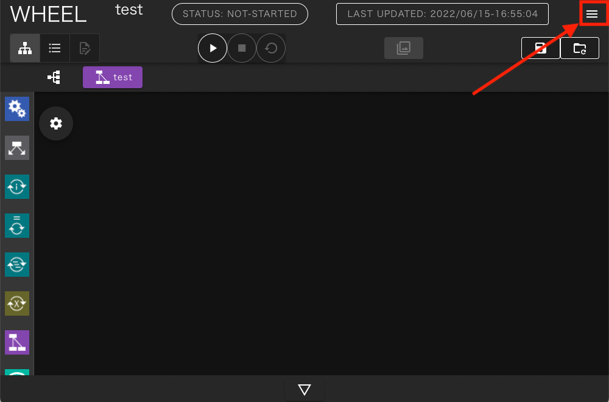
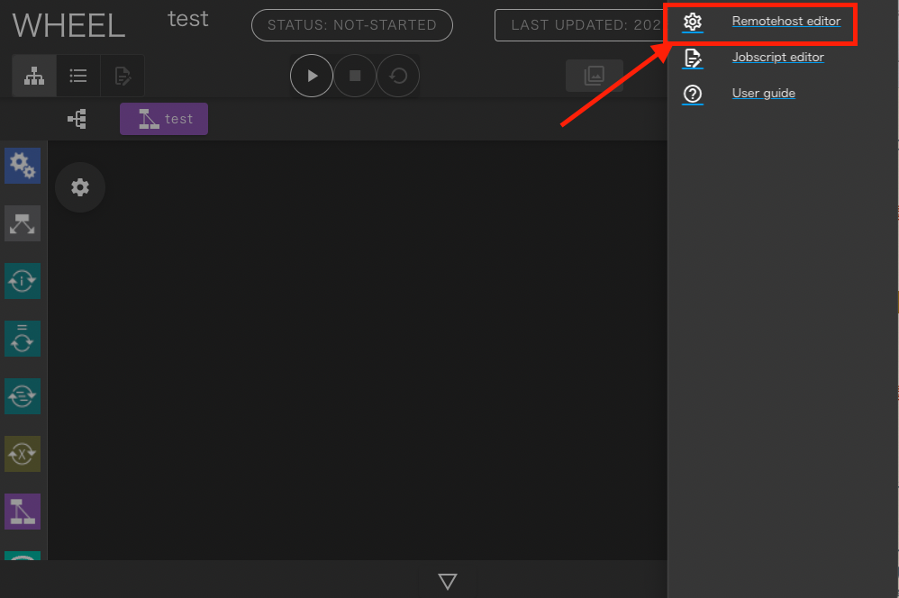
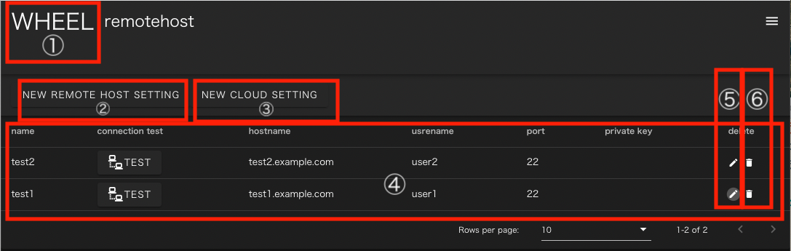
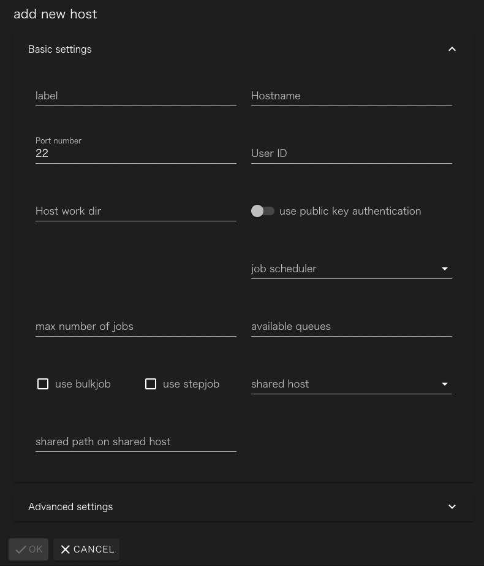
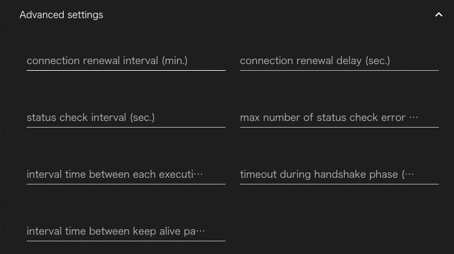
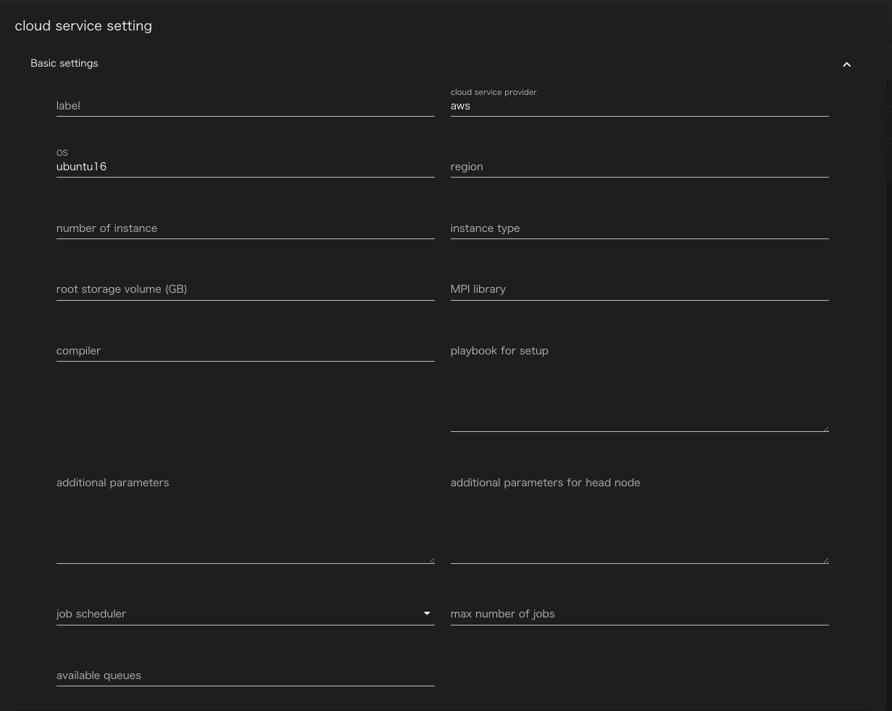

リモートホストの登録 #
ワークフロー内でWHEELサーバ外の計算環境（以下、リモートホスト）を用いる場合、対象とするリモートホストにSSH接続し処理を実行します。 WHEELでは、ワークフロー画面（Taskコンポーネント）にて使用するリモートホストの情報及びリモートホストに登録されているユーザ情報をリモートホスト登録画面にて設定します。
リモートホスト登録画面への移動 #
リモートホスト登録画面は、画面右上のハンバーガーメニューをクリックした時に表示されるリンクを クリックすると表示されます
 
リモートホスト登録画面 #
リモートホスト登録画面の構成は以下のようになっています。 
- タイトル ：ホーム画面遷移ボタン
- 新規リモートホスト登録ボタン：リモートホストへの接続情報を新しく作成します
- 新規クラウド設定登録ボタン ：クラウド上にクラスタを構成する設定を新しく作成します
- リモートホストリスト：登録済みリモートホスト情報
- テストボタン: 設定した接続情報でリモートホストにアクセスできるかどうかを確認します
- 編集ボタン : 入力済の接続情報を編集します
- 削除ボタン : 入力済の接続情報を削除します
新規リモートホスト登録画面 #
新規リモートホスト登録ボタンをクリックすると次の画面が表示されます。

フォームの各部には次の情報を設定してください。
| label | 接続情報を区別するための一意な文字列 |
| Hostname | 接続先のホスト名(IPアドレスでも可) |
| Port number | 接続先のポート番号 |
| User ID | ログインに使用するユーザ名 |
| Host work dir | 接続先で、実行に使うディレクトリの最上位のパス |
| use public key authentication | on にすると公開鍵認証が、offにするとパスワード認証が使われます。 |
| private key path | 秘密鍵のファイルパス(use public key…がonの時のみ表示されます |
| job scheduler | リモートホストで使われているジョブサーバ |
| max number of jobs | 同時に投入するジョブの最大値 |
| available queues | リモートホスト上で利用可能なキューの名前。カンマ区切りで記載してください |
| use bulkjob | (富岳のみ)バルクジョブを使えるサイトかどうか |
| use stepjob | (富岳のみ)ステップジョブを使えるサイトかどうか |
| shared host | ストレージを共用している他のリモートホストのラベル |
| shared path on shared host | shared host上でHost work dirへアクセスするためのパス |
Advanced settingsの右にある▽をクリックすると、詳細設定の入力フォームが開きます。

| connection renewal interval(min.) | sshを定期的に再接続する時の間隔 [分] 0の時(デフォルト)は再接続しない |
| connection renewal delay(sec.) | 再接続時の待ち時間[秒] （デフォルト値 0） |
| status check interval(sec.) | ジョブ投入後のステータス確認を行う間隔[秒]（デフォルト値 10） |
| max number of status check error allowed | ステータス確認の失敗を何回まで許容するか |
| interval time between each executions | 1つのジョブ実行が終わった後、次のジョブを実行するまでの待ち時間[秒] |
| timeout during handhake phase(msec.) | sshのハンドシェイク時の待ち時間[ミリ秒] |
| interval time between keep alive packet(msec.) | sshクライアントがkeep alive packetを投げる間隔[ミリ秒] |
必要な情報を入力し、OKボタンをクリックするとリモートホスト接続設定が保存されます。
Cloud #
詳細はCloud(AWS)インスタンス利用方法を参照ください
新規クラウド設定登録ボタンをクリックすると次の画面が表示されます。

フォームの各部には次の情報を設定してください。
| Label | リモートホスト識別ラベル | 重複不可 * |
| Cloud service provider | クラウドサービスプロバイダー名 | 現バージョン(ver2.1.0)では、「aws」のみ対応 * |
| OS | OS名 | 現バージョン(ver2.1.0)では、「ubuntu16」のみ対応 * |
| region | インスタンスを起動するリージョン | * ex. ap-northeast-1 |
| numNodes | 起動するノード数 | * |
| InstanceType | 起動するインスタンスタイプ | * ex. t2.micro |
| rootVolume | rootのEBSボリューム | 起動するインスタンスにアタッチされるrootのEBSボリュームのサイズ（デフォルト値 8 [GB]） |
| shareStorage | 共有ストレージの利用設定 | （デフォルト値 利用する） |
| mpi | MPI | ー |
| compiler | コンパイラ | ー |
| playbook | 起動時に実行されるplaybook | ー |
| additionalParams | aws-sdkのEC2.runInstancesに渡すことのできる設定値 | access keyおよび secret access key等を設定可能 |
| additionalParamsForHead | additionalParamsのうちヘッドノードのみに適用する値 | ー |
| JobScheduler | WHEELに登録されているジョブスケジューラ名 | app/config/jobSceduler.jsonに定義されているジョブスケジューラ名を設定する ただし、インスタンスにジョブスケジューラがインストールされている必要がある。 ジョブスケジューラ「PBSPro」を設定した場合、WHEELが起動するクラスタにPBSProをインストールする |
| Max Job | ジョブ投入制限数 | 接続先リモートホストから同時に投入できる最大ジョブ数（デフォルト値 5） |
| Queue | Queue名 | 接続先ホストからジョブを投入する時に使えるキュー、カンマ区切りで複数入力可（ex. A, B, C） |
Advance settings の項目はリモートホストと同じです。
必要な情報を入力し、OKボタンをクリックするとクラウド設定が登録されます。